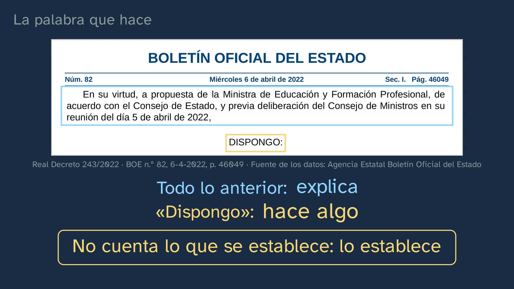
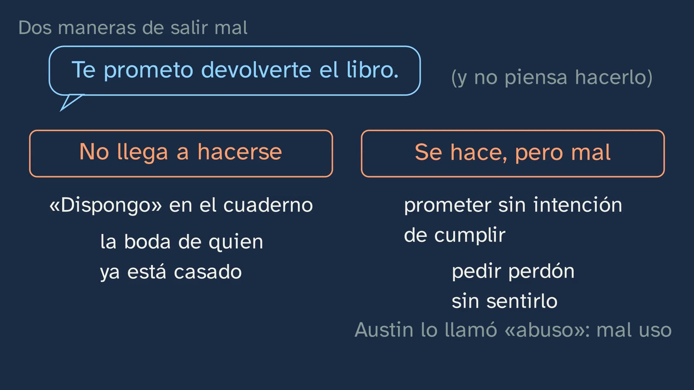
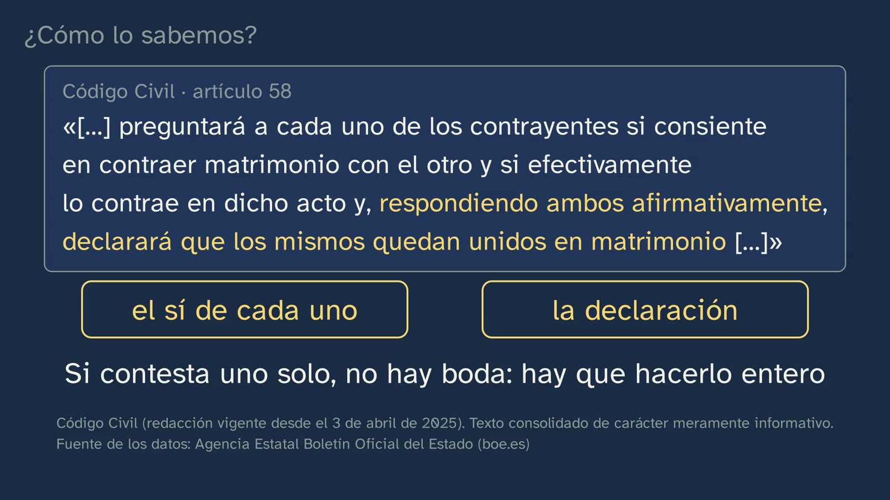
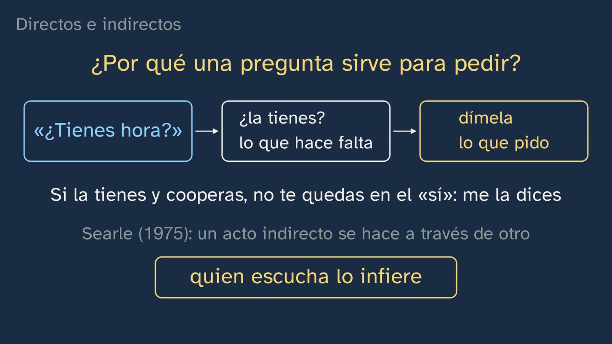
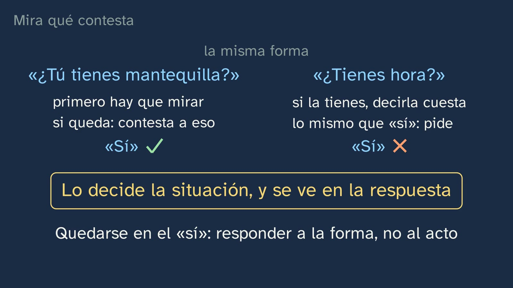
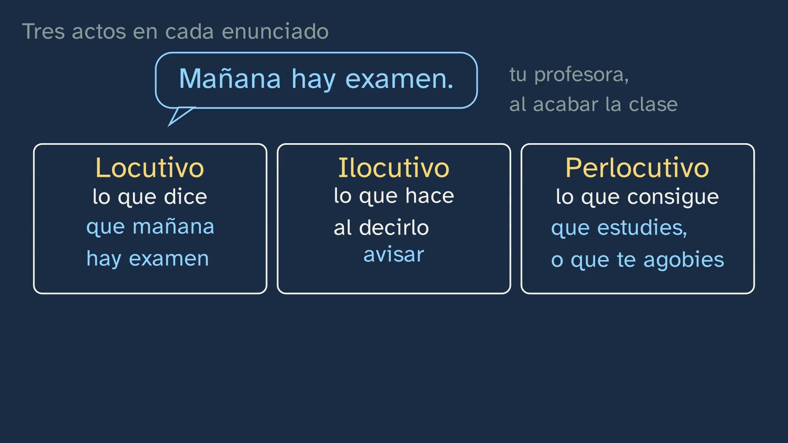

Hacer cosas con palabras
En pocas palabras
Después de recuperar la clase 1 y dar sus soluciones, la clase arranca con una palabra del Boletín Oficial del Estado: «DISPONGO». Es la que cierra el preámbulo del Real Decreto 243/2022 (BOE n.º 82, de 6 de abril de 2022, p. 46049), el que fija la base de lo que se estudia en el Bachillerato en toda España. Todo lo anterior explica; esa palabra, en cambio, hace algo: no cuenta lo que se establece, lo establece. Vera baja enseguida del BOE a la vida diaria («Te lo prometo», «Te pido perdón», «Te doy las gracias») y pide una predicción: de «Te prometo que mañana te devuelvo el libro» y «Ana me prometió que me devolvía el libro», ¿pueden ser falsas las dos? La respuesta sale de una prueba de lingüista, cambiar el verbo de persona y de tiempo y mirar qué pasa: una frase cuenta algo y puede ser falsa; la otra no cuenta una promesa, la hace, y sale bien o sale mal. Son los enunciados realizativos de John L. Austin (conferencias de Harvard de 1955, publicadas en 1962 como How to Do Things with Words; el título de la clase es un homenaje a su traducción, Cómo hacer cosas con palabras). Después, por qué un acto puede fallar: «Dispongo» escrito en un cuaderno no cambia ningún plan de estudios, y el propio preámbulo del decreto enumera quién tiene que intervenir. Son las condiciones de Austin, y la prueba de que no son una manía de filósofo está en el Código Civil (arts. 58, 46 y 73): en una boda tienen que responder los dos, no puede casarse quien ya está casado y es nula la boda sin quien debe celebrarla. Austin separó dos fallos: el acto que no llega a hacerse y el que se hace, pero mal, que llamó «abuso», en el sentido de mal uso. Con la vuelta de tuerca de Austin, también afirmar es hacer, y cada enunciado tiene tres actos: el locutivo, el ilocutivo y el perlocutivo. Cae el error típico, «hablar es describir», con su consecuencia para la convivencia: quien habla responde de lo que hace con sus palabras, y quien tiene autoridad hace más con ellas. La segunda mitad ordena lo que hacemos en las cinco clases de John Searle (1975) y las pone a prueba con una frase real del corpus ESLORA, «Te prometo que no la vi», que no promete nada: no decide el verbo, decide lo que haces. Al final, la promesa de la clase 1: «¿tienes hora?» es un acto indirecto, una pregunta que pide, y sirve para pedir porque pregunta justo por lo que hace falta para dártela. Dos conversaciones reales lo prueban: los investigadores de ESLORA anotaron un «¿tienes hora?» como acto directivo, y en una cocina tres preguntas con forma de pregunta reciben tres respuestas distintas, según el acto que la otra ha entendido.
Objetivo. Al terminar, el alumnado sabrá reconocer qué hace un enunciado además de decir algo (prometer, pedir, disculparse, casar…), distinguir los actos de habla directos de los indirectos y explicar por qué un acto puede fallar.
Currículo
Real Decreto 243/2022, Lengua Castellana y Literatura I, materia común de 1.º de Bachillerato (texto consolidado del BOE, comprobado el 05/10/2026: su última actualización, del 02/07/2026, sólo toca el artículo 23.4; el anexo de Lengua no ha cambiado desde 2022).
| Elemento | Qué dice el decreto | Dónde se trabaja |
|---|---|---|
| Saber básico (bloque B, «Comunicación», 1. Contexto) | «Componentes del hecho comunicativo: grado de formalidad de la situación y carácter público o privado; distancia social entre los interlocutores; propósitos comunicativos e interpretación de intenciones; canal de comunicación y elementos no verbales de la comunicación.» | Su centro: «propósitos comunicativos e interpretación de intenciones». Qué hace quien habla (prometer, pedir, nombrar, disponer) y cómo lo interpreta quien escucha: la inferencia del indirecto (12:05) y la respuesta que lo delata (13:43). La formalidad y la distancia llegan en las clases 3 a 5 |
| Saber básico (bloque B, 3. Procesos) | «Comprensión oral: sentido global del texto y relación entre sus partes, selección y retención de la información relevante. La intención del emisor. Detección de los usos discriminatorios del lenguaje verbal y no verbal. Valoración de la forma y contenido del texto.» | «La intención del emisor», en tres intercambios orales reales del corpus ESLORA (11:06, 12:27 y 13:06). Lo demás de este saber, en otras clases |
| Saber básico (bloque D, «Reflexión sobre la lengua») | «Elaboración de conclusiones propias sobre el funcionamiento del sistema lingüístico con un metalenguaje específico a partir de la observación, comparación y clasificación de unidades comunicativas y del contraste entre lenguas […]» | El método de la clase. Observar (el BOE, el Código Civil, el corpus), comparar («te prometo» frente a «me prometió», 3:20; «¿tienes mantequilla?» frente a «¿tienes hora?», 14:10), clasificar (las cinco clases, 9:06; directos e indirectos, 11:34) y nombrarlo con su metalenguaje: realizativo, locutivo, ilocutivo, perlocutivo, asertivo, directivo, compromisivo, expresivo, declarativo, directo, indirecto. El contraste entre lenguas, en esta ficha: el «I do» de Austin y el «Sí, juro» de su traducción (ver «Notas para el profesorado») |
| Competencia específica 2 | «Comprender e interpretar textos orales y multimodales, con especial atención a los textos académicos y de los medios de comunicación, recogiendo el sentido general y la información más relevante, identificando el punto de vista y la intención del emisor y valorando su fiabilidad, su forma y su contenido, para construir conocimiento, para formarse opinión y para ensanchar las posibilidades de disfrute y ocio.» | Identificar la intención del emisor en conversaciones reales. Su descripción dice qué es comprender: «un constante proceso de interpretación de intenciones en el que entran en juego el conocimiento compartido entre interlocutores y todos aquellos elementos contextuales y cotextuales que permiten ir más allá del significado del texto e interpretar su sentido». Es lo que hace quien oye «¿tienes hora?» y contesta con la hora |
| Competencia específica 9 | «Consolidar y profundizar en el conocimiento explícito y sistemático sobre la estructura de la lengua y sus usos, y reflexionar de manera autónoma sobre las elecciones lingüísticas y discursivas, con la terminología adecuada, para desarrollar la conciencia lingüística, para aumentar el repertorio comunicativo y para mejorar las destrezas tanto de producción oral y escrita como de comprensión e interpretación crítica.» | El conocimiento explícito de los usos, con su terminología. Su descripción pide integrar «los niveles morfosintáctico, semántico y pragmático» y un método: «la manipulación de enunciados, el contraste entre oraciones, la formulación de hipótesis y de reglas, el uso de contraejemplos». La clase manipula («te prometo» → «me prometió», 3:20; «te aviso» frente a «te convenzo», 7:59) y usa un contraejemplo real («Te prometo que no la vi», 11:06) |
| Competencia específica 10 | «Poner las prácticas comunicativas al servicio de la convivencia democrática, la resolución dialogada de los conflictos y la igualdad de derechos de todas las personas, utilizando un lenguaje no discriminatorio y desterrando los abusos de poder a través de la palabra, para favorecer un uso no solo eficaz sino también ético y democrático del lenguaje.» | «Los abusos de poder a través de la palabra», con la herramienta de la clase: si hablar es hacer, quien habla responde de lo que hace, y quien tiene autoridad hace más con sus palabras («quedas despedido», «estás expulsado», 8:41). Por eso importa quién puede decirlas (4:23). Su descripción: «Erradicar los usos discriminatorios y manipuladores del lenguaje, así como los abusos de poder a través de la palabra es un imperativo ético» |
| Criterio 2.1 | «Identificar el sentido global, la estructura, la información relevante en función de las necesidades comunicativas y la intención del emisor en textos orales y multimodales complejos propios de diferentes ámbitos, analizando la interacción entre los diferentes códigos.» | Sólo una parte: la intención del emisor, en intercambios orales breves y reales. Los textos complejos quedan para más adelante |
| Criterio 9.2 | «Explicar y argumentar la interrelación entre el propósito comunicativo y las elecciones lingüísticas del emisor, así como sus efectos en el receptor, utilizando el conocimiento explícito de la lengua y un metalenguaje específico.» | Por qué alguien elige pedir con una pregunta o con una pista en lugar de con una orden (11:34), y sus «efectos en el receptor», que son lo perlocutivo (7:50) y la respuesta (13:43). Los ejercicios 1 y 3 lo piden por escrito |
| Criterio 10.1 | «Identificar y desterrar los usos discriminatorios de la lengua, los abusos de poder a través de la palabra y los usos manipuladores del lenguaje a partir de la reflexión y el análisis de los elementos lingüísticos, textuales y discursivos utilizados, así como de los elementos no verbales que rigen la comunicación entre las personas.» | «Los abusos de poder a través de la palabra»: el bloque de 8:20, la actividad del BOE (quién puede decir qué, y quién responde de ello) y la pregunta abierta |
«Acto de habla» no está en el decreto de Bachillerato, ni «realizativo», ni «ilocutivo»: buscados en el anexo entero. La base literal es «interpretación de intenciones», «la intención del emisor», el propósito comunicativo y sus «efectos en el receptor» (9.2), lo «pragmático» (descripción de la CE9) y los «abusos de poder a través de la palabra» (CE10). Lo que aporta la clase son los «instrumentos de análisis» que pide la introducción de la materia: «La profundización respecto a la etapa anterior estriba en una mayor conciencia teórica y metodológica para analizar la realidad, así como en la movilización de un conjunto mayor de conocimientos, articulados a través de instrumentos de análisis que ayuden a construir y a estructurar el conocimiento explícito sobre los fenómenos lingüísticos y literarios tratados.» Ninguna de las ocho comunidades revisadas (Andalucía, Cataluña, Madrid, Comunitat Valenciana, Galicia, Castilla y León, País Vasco y Aragón) nombra los actos de habla en Lengua I, y todas piden la intención del emisor. Madrid añade un saber que la clase toca de lleno, «La modalidad. Formas lingüísticas para la expresión de la subjetividad y de la objetividad.» (Decreto 64/2022, saberes de 1.º, B.4, BOCM n.º 176, p. 269): la «forma» de la que habla la clase en 11:34 es la modalidad oracional.
Lo que hay que traer. De la clase 1, el significado y el sentido, la inferencia y el principio de cooperación: la clase los recupera en 0:17 y los usa para explicar el indirecto (12:05). De la ESO, el nombre: el Real Decreto 217/2022 pide en 3.º y 4.º «la conversación, con especial atención a los actos de habla que amenazan la imagen del interlocutor (la discrepancia, la queja, la orden, la reprobación)» (BOE n.º 76, 30/03/2022, p. 41711), y seis de las ocho comunidades revisadas lo recogen en su ESO; Madrid, ya en 1.º y 2.º («practicando actos de habla: contando, opinando, dialogando, describiendo»). Muchos llegarán con el paquete que dan los libros y los recursos abiertos de ESO: tres «dimensiones» del acto y cinco clases, casi siempre sin autor. Lo nuevo aquí son los autores, con su obra y su página; por qué un acto falla, y por qué funciona un indirecto. Ninguno de los libros de 1.º de Bachillerato que hemos podido leer (Vicens Vives, Tabarca, McGraw-Hill, SM, Editex, Algaida, Casals, Teide y Micomicona; contraste del 05/10/2026) cita a Austin ni a Searle con su obra y su fecha, explica los fallos de Austin o dice por qué una pregunta sirve para pedir. El término «acto de habla», que es el del libro y el de la ESO, la clase lo da al final del capítulo «Hablar siempre es hacer»; conviene contar también su historia (error 6).
Cómo está construida la clase
Capítulos del vídeo
Diecisiete minutos, en trece capítulos. Es una clase de teoría: Vera, en su mesa, y la pizarra. Sigue las bases formativas del canal y lo que el decreto pide a esta materia en Bachillerato: instrumentos de análisis, con sus autores, y la reflexión sobre la lengua por indagación (CE9). Por eso no da una lista de definiciones: parte de un texto real que hace algo, lo manipula, enseña cómo falla y lo comprueba con la ley y con datos de corpus. Es la segunda de las siete clases del tema; la siguiente es el primer laboratorio de lengua, «¿Cómo pedimos las cosas?», y esta le deja planteada la hipótesis.
| Capítulo | Qué pasa | Por qué así |
|---|---|---|
| Qué vamos a ver | Vera saluda y vuelve al mapa del tema, con sus siete clases numeradas y la segunda resaltada. Hoy, un paso más: al hablar, además de decir cosas, las hacemos. | Saber dónde se está. El tema 1 conserva el mapa numerado que enseñó su primera clase. |
| Lo que ya sabes | ¿Qué diferencia hay entre el significado de una frase y su sentido? Pausa. Lo que dicen las palabras, lo que comunican en su situación, y el salto entre los dos: la inferencia. | Recuperar lo que esta clase necesita: sin inferencia no se entiende el acto indirecto. |
| Las soluciones | Los tres ejercicios de la clase 1, en algo más de un minuto. Después, el gancho, a cámara: «Hay palabras que no cuentan lo que pasa: hacen que pase. Y una de ellas manda sobre lo que estudias este curso». | Práctica espaciada. El gancho promete algo que toca al alumno: su propio temario. |
| La palabra que hace | El BOE del 6 de abril de 2022, con el «DISPONGO» del Real Decreto 243/2022 (p. 46049), su glosa («establezco») y quién habla en él (el rey, que firma con la ministra). La palabra hace algo: no cuenta lo que se establece, lo establece. Luego, lo mismo en la vida diaria: «Te lo prometo», «Te pido perdón», «Te doy las gracias». Predicción: ¿pueden ser falsas «Te prometo que mañana te devuelvo el libro» y «Ana me prometió que me devolvía el libro»? Pausa. Sólo la segunda, y se sabe cambiando el verbo de persona y de tiempo. | Un texto real que nadie esperaba en clase de Lengua, y luego la intuición con lo cotidiano. La predicción va antes de la regla, y la regla sale de una manipulación, el método de la CE9. |
| Austin: decir es hacer | J. L. Austin, sus conferencias de Harvard de 1955 y el nombre: enunciado realizativo (en inglés, performative), que no describe una acción, la realiza, y no es verdadero ni falso, sino que sale bien o mal. El título de la clase, un homenaje a su libro. | Lo exacto, con su autor y su obra, después de que el alumno lo haya visto funcionar. |
| Cuando sale mal | «Dispongo» en un cuaderno: las mismas palabras, y no pasa nada. El preámbulo del decreto, justo antes, enumera quién tiene que intervenir: la ministra lo propone, el Consejo de Estado está de acuerdo y el Consejo de Ministros lo delibera. Las condiciones de Austin: una forma aceptada, las personas adecuadas, las circunstancias adecuadas, y hacerlo entero y bien. | La prueba sale del mismo texto del gancho. El preámbulo «recita» las condiciones y «DISPONGO» opera, que es justo la comparación de Austin con el lenguaje de los juristas (1962, p. 7). |
| ¿Cómo lo sabemos? | El Código Civil, art. 58: quien celebra la boda pregunta a cada uno si consiente y, si los dos responden que sí, declara que quedan unidos en matrimonio. Dos actos hechos con palabras. Si contesta uno solo, no hay boda. No puede casarse quien ya está casado (art. 46) y es nula la boda sin quien debe celebrarla (art. 73). Los ejemplos de fallo de Austin eran casi los mismos, y en un escenario estas frases quedan huecas. Los dos fallos: el acto que no llega a hacerse y el que se hace, pero mal («abuso»). | La pregunta del canal: no es una teoría de despacho, la ley la aplica. Ninguno de los libros revisados usa un texto jurídico real para los actos de habla: sus bodas y sus juicios son inventados. |
| Hablar siempre es hacer | Parecía que había frases que describen y frases que hacen. Austin siguió tirando del hilo: también afirmar es hacer, y quien afirma se compromete. Los tres actos de «Mañana hay examen», dicho por tu profesora: lo que dice (locutivo), lo que hace al decirlo, avisar (ilocutivo), y lo que consigue, que estudies o que te agobies (perlocutivo). Y una prueba para separar los dos últimos: «Te aviso» se puede decir; «te convenzo» no basta para convencer. | Un ejemplo resuelto entero, de una situación que el alumno conoce. La prueba es del propio Austin. |
| El error típico | «Hablar es describir», tachado. Hablar es actuar, y por eso quien habla responde de lo que hace con sus palabras. Un insulto o una amenaza son actos; un «quedas despedido» o un «estás expulsado», dichos con autoridad, cambian la vida de otro. Usarlas para humillar o amenazar es abusar del poder de las palabras. Vera, a cámara: lo importante hasta aquí. | El error planteado y desmontado con todo lo visto. La CE10, trabajada con la herramienta de la clase, no añadida al final como una moraleja. |
| Cinco cosas que hacemos al hablar | Searle (1975) ordena los actos en cinco clases según lo que intentas hacer: asertivos, directivos (también preguntar), compromisivos, expresivos y declarativos, en dos bloques y con un ejemplo cada uno. «Para y piensa»: «Gracias por venir», «¿Me dejas tu cargador?», «Te nombro capitana» y una frase real, «Te prometo que no la vi». Pausa. La última no promete nada: asegura algo que ya pasó. Es un asertivo. «No decide el verbo: decide lo que haces». | La clasificación, partida para que se pueda seguir en voz alta, y enseguida puesta a prueba. El contraejemplo real desmonta la idea de que el verbo decide el acto. |
| Directos e indirectos | «¿Tienes hora?», la promesa de la clase 1. Por su forma, una pregunta; por su acto, una petición. «Dime qué hora es, por favor» es directo; «¿Tienes hora?», indirecto. ¿Por qué una pregunta sirve para pedir? Porque pregunta justo por lo que hace falta para dártela: si la tienes y cooperas, no te quedas en el «sí». Searle: el acto indirecto se hace a través de otro, y quien escucha lo infiere. | Se cumple lo prometido en la clase 1, y con la explicación, no sólo con el nombre: ningún libro revisado dice por qué funciona un indirecto. En pantalla, junto a «Forma», «(modalidad)», el puente con lo que el profesorado ya enseña. |
| En la vida real | En las entrevistas del corpus ESLORA, los investigadores anotan algunas de las cosas que hacen las frases, y anotaron un «¿tienes hora?» real como acto directivo. Después, una conversación entre dos universitarias que hacen bechamel: «¿Tú tienes mantequilla?» — «A ver… Sí»; «¿Me das la mantequilla?» — «¡Toma! ¡Claro, mujer!»; «Pero ¿tienes suficiente?» — «Sí, sí». Cada pregunta recibe la respuesta del acto que la otra ha entendido. ¿Y por qué el «sí» vale para la mantequilla y no para la hora? | Datos reales con su referencia y su licencia en pantalla, como en los laboratorios de lengua. Otra vez la pregunta del canal, «¿cómo lo sabemos?»: qué acto ha entendido quien escucha se sabe mirando qué contesta. |
| Para practicar y seguir pensando | El resumen, avisando de que se insiste, y la vuelta al «Dispongo»: «no cuenta, dispone». Tres ejercicios, la pregunta abierta (un «me gusta», ¿qué acto hace? ¿puede salir mal?) y la hipótesis del laboratorio siguiente: «cuanto más pides, y a quien menos confianza tienes, más rodeos das». Vera se despide: de lo que haces con tus palabras, respondes tú. | Práctica espaciada: las soluciones abren la clase 3. El gancho vuelve al final y cierra el círculo. |
Puentes con otras materias. Filosofía: Austin y Searle son filósofos del lenguaje, y el pasaje de Austin sobre el actor (1962, p. 22) es el centro de la polémica de Jacques Derrida con Searle («Signature Event Context», en Limited Inc, 1988); antes que ellos, Thomas Reid (1788) y Adolf Reinach (1913) habían pensado prometer, pedir o perdonar como «actos sociales» (B. Smith, 1990; Stanford Encyclopedia of Philosophy, «Speech Acts», nota 1). Economía y Derecho: muchas cosas que mueven dinero o derechos se hacen con palabras. Tres de los cuatro primeros ejemplos de Austin son de ese mundo: una boda, un testamento («I give and bequeath my watch to my brother») y una apuesta (1962, p. 5); «contract» está en su lista de verbos de compromiso (la copia Searle, 1975, p. 351), y en Derecho se ha estudiado qué normas son realizativas, que «no son verdaderas ni falsas […]; solamente pueden ser afortunadas o desafortunadas» (López Hernández, 2005, p. 500). Lengua, en su propio temario: la «forma» de la clase es la modalidad oracional, y la clase da la teoría de la «intención comunicativa» que pide la PAU (ver el error 5 y «Notas para el profesorado»). Historia del Mundo Contemporáneo: la fórmula con la que el rey sanciona las leyes («Yo vengo en sancionar…», «Mando a todos los españoles…») «no difiere excesivamente de la que establecía la Constitución de Cádiz», dice el comentario oficial del Congreso a su artículo 91. Artes Escénicas II: el mismo decreto pide en sus saberes «Actos performativos: generación de realidad.» (RD 243/2022, p. 46087). Es la palabra de Austin, performative, y Austin dice que en un escenario estas frases quedan huecas: buena pregunta para hacérsela a esa otra materia.

Plan de una sesión de 50 minutos
| Minutos | Qué se hace |
|---|---|
| 0–4 | Sin vídeo. «Antes de empezar», en la hoja: cada cual escribe tres cosas que ha hecho hoy sólo con palabras, dichas o escritas. No vale «hablar»: ¿qué hizo al hablar? Se guardan para el final. |
| 4–10 | Vídeo de 0:00 a 3:55. Parar en 0:26 (significado y sentido: medio minuto por escrito) y en 3:15 (¿pueden ser falsas las dos?: a mano alzada, y una pregunta más, que es la buena: «¿qué tendría que pasar para que la primera fuera falsa?»). |
| 10–17 | Vídeo de 3:55 a 6:52: Austin, «Dispongo» en el cuaderno, las condiciones, el Código Civil y los dos fallos. Al parar, en parejas, la tabla «¿Sale bien o sale mal?» de la hoja (3 minutos). |
| 17–24 | Vídeo de 6:52 a 10:46: hablar siempre es hacer, los tres actos, el error típico, Vera a mitad y las cinco clases de Searle. Parar en 10:41 (el «para y piensa»): cada cual clasifica las cuatro frases por escrito antes de oír las respuestas. |
| 24–36 | La actividad: cazadores de actos en el BOE. |
| 36–44 | Vídeo de 10:46 a 14:50: las respuestas («Te prometo que no la vi»), directos e indirectos y las conversaciones reales. Parar en 13:43, antes de que Vera compare las respuestas: «¿qué acto ha entendido la otra en cada pregunta? ¿En qué te basas?». |
| 44–50 | Vídeo de 14:50 al final (17:04). Volver a la lista del principio: ¿qué clase de acto era cada cosa? ¿Alguna era indirecta? Los ejercicios, para casa con la hoja. |
Errores típicos y cómo se tratan
Con una advertencia honesta: ninguno está medido con alumnado español de Bachillerato. El primero es el que la ficha del tema prevé para esta clase, y nadie, que sepamos, lo ha medido; los demás los hemos encontrado escritos en libros de texto, en recursos abiertos y en obras de consulta (contraste del 05/10/2026), así que es razonable esperar que lleguen al aula.
- «Hablar es describir». Es el error que la clase desmonta de frente (8:20), y el que Austin quería desmontar: «It was for too long the assumption of philosophers that the business of a 'statement' can only be to 'describe' some state of affairs, or to 'state some fact', which it must do either truly or falsely» (durante demasiado tiempo los filósofos supusieron que un enunciado sólo sirve para describir algo o afirmar un hecho, y que por eso es verdadero o falso; 1962, p. 1; traducción nuestra). A ese error se le llama la falacia «descriptiva» (p. 3); Austin no acuña ahí el nombre, dice que «se llama» así, y ya lo había usado en 1946. En los libros aparece de forma más discreta: la declarativa como «información neutra» («Hoy es lunes», Editex) o como «información real» (Teide). La clase lo trata en dos tiempos: primero separa lo que describe de lo que hace (3:20), y luego, con Austin, lo funde: «Surely to state is every bit as much to perform an illocutionary act as, say, to warn or to pronounce» (sin duda, afirmar es tan realizar un acto ilocutivo como avisar o dictaminar; 1962, p. 133; 1975, p. 134). Un cuidado para no pasarse al otro lado: que todo enunciado haga algo no quiere decir que describir no exista. Describir es uno de los actos (los asertivos), y Austin no tira la distinción: la conserva como un caso particular de su teoría general (1962, p. 147; 1975, p. 148).
- Exigir a los realizativos primera persona y presente. Lo dice McGraw-Hill NOVA (2026): los performativos «deben usarse en tiempo presente y en primera persona». Austin dice lo contrario: «person and voice anyway are not essential» (la persona y la voz, en todo caso, no son esenciales; 1962, p. 57), con ejemplos como «You are hereby authorized to pay…» y «Notice is hereby given that trespassers will be prosecuted» (p. 57); y en la página siguiente, que el modo y el tiempo tampoco sirven como criterio absoluto: en vez de «I give you off-side» basta «You were off-side», y en vez de «I find you guilty», «You did it» (p. 58). El mismo libro se desmiente en su actividad 11d: «Queda inaugurada esta exposición» es un realizativo de libro y está en tercera persona. La Nueva gramática trae otros: «Se levanta la sesión», «Queda usted despedido» (§ 42.2). Y la propia clase: «Perdona» y «Mañana te lo devuelvo» (9:53–10:05) hacen lo que hacen sin «te pido perdón» ni «te prometo». Un aviso sobre el vídeo: la prueba de 3:39 («cambia la persona y el tiempo del verbo, y mira qué pasa») es una prueba, que funciona muy bien con «te prometo», no una regla de lo que es un realizativo. Al revés tampoco vale: la primera persona del presente no basta. «Te estoy pidiendo perdón» sólo describe lo que haces; «No te prometo llevarte al cine» no promete (Nueva gramática, § 42.2); «Te insulto» no insulta (Glosario de términos gramaticales, «verbo realizativo»). Ni la fórmula «por la presente» (el hereby de Austin) es infalible: Austin la propone como «a useful criterion» (p. 57) y enseguida avisa de que es demasiado formal y de que también vale para «I hereby state…», que es una afirmación (p. 61).
- «La forma, o el verbo, decide el acto». Es el error que más repiten los libros: tratar la modalidad de la oración como si fuera el acto («Orden = verbo en imperativo», en Teide; «Di dónde vives» como interrogativa, en Casals RADIX). La clase lo desmonta en tres pasos sin nombrarlo: «Te prometo que no la vi» lleva «prometo» y es un asertivo (11:28: «No decide el verbo: decide lo que haces»); «¿Tienes hora?» tiene forma de pregunta y pide (11:34); y la misma forma, «¿tienes…?», hace actos distintos según la situación (14:10). Searle lo advierte a su manera: una cosa son los verbos y otra los actos (1975, p. 368). Para quien quiera darle una vuelta, la propia clase trae un caso: «Perdona» (10:05) tiene forma imperativa, y es un expresivo. Una respuesta razonable: en las fórmulas fijas, como «perdona» o «¿me das…?», casi nadie oye ya la forma.
- Confundir lo perlocutivo con lo que hace el oyente. Lo hacen varios recursos abiertos: en «Tengo frío», llamar perlocutivo a que la profesora cierre la ventana (INTEF, «La modalidad oracional y los actos de habla»); o decir que el perlocutivo de «Préstame tu lápiz» es «prestar el lápiz» y que, si no se lo presta, «la comunicación se frustrará» (blog «No te muerdas la lengua»). El perlocutivo es un acto de quien habla: lo que consigue al decir algo, «such as convincing, persuading, deterring, and even, say, surprising or misleading» (como convencer, persuadir, disuadir, e incluso sorprender o confundir; Austin, 1962, p. 108; 1975, p. 109). Que el oyente estudie es la consecuencia; conseguir que estudie es el acto perlocutivo. Por eso la clase lo dice así: «lo que consigue en quien escucha» (7:50). Y la petición no se frustra porque el otro diga que no: el acto ilocutivo se ha hecho si se ha entendido. Hay un ejemplo real para verlo, en «Lo que la clase deja fuera». Dos matices que la clase deja ver: el efecto puede no buscarse («o que te agobies», 7:50), y el efecto perlocutivo puede alcanzar también a quien habla o a otras personas (p. 101); el vídeo, por sencillez, sólo habla de quien escucha.
- Llamar «intención» al acto ilocutivo sin matizar. El diccionario académico define «ilocutivo» por «la intención del hablante al emitirlo», el CVC habla de «un acto ilocutivo o intención», y McGraw-Hill NOVA, de «la intención o la función comunicativa». No es un disparate, porque el propio decreto y la PAU hablan de «la intención del emisor» y de «la intención comunicativa del autor». Pero Austin define el ilocutivo por su fuerza convencional, «utterances which have a certain (conventional) force» (1962, p. 108; 1975, p. 109), y añade: «Illocutionary acts are conventional acts» (p. 119). La diferencia se nota en dos casos de la clase. Una promesa sin intención de cumplirla sigue siendo una promesa (6:20): si el ilocutivo fuera la intención, no lo sería. Y la intención de producir un efecto es lo que define lo perlocutivo (p. 101): de ahí sale el error de poner «persuadir» como intención ilocutiva (en Tabarca, «Directivos… El emisor trata de persuadir»; y en el INTEF), cuando persuadir es el ejemplo de perlocución de Austin. La clase evita la palabra: el ilocutivo es «lo que hace al decirlo» (7:39). En el aula se puede decir así: la intención del emisor es lo que el oyente infiere; el acto ilocutivo es lo que cuenta como hecho.
- «El término "acto de habla" lo acuñó Searle». Es falso, aunque lo diga el Diccionario de términos clave de ELE del Centro Virtual Cervantes, «El término fue acuñado posteriormente por un discípulo suyo, el filósofo J. Searle, quien perfeccionó y consolidó dicha teoría», y lo copie casi palabra por palabra Tabarca (2022, p. 40). Austin ya escribe «speech-act» (1962, p. 40) y «The total speech act in the total speech situation» (p. 147; p. 148 en la 2.ª edición). Antes, Karl Bühler usó «Sprechakt» y habló de una «teoría de los actos de habla» (1934), y Adolf Reinach teorizó los «actos sociales» (1913) (B. Smith, 1990). Searle lo hizo título de su libro de 1969 y lo sistematizó. Que fuera «discípulo» de Austin no lo hemos comprobado: mejor no decirlo. La misma entrada del CVC dice que Austin expuso sus ideas «en la década de los 40»; según el prefacio de su editor, las ideas se formaron en 1939, las clases de Oxford sobre el tema («Words and Deeds») fueron de 1952 a 1954 y las conferencias de Harvard, en 1955. La traducción española, por cierto, llama a speech act «acto lingüístico».
- Y un aviso, que no es un error: «¿tienes hora?» es el ejemplo de manual. Lo traen el CVC, Tabarca («¿Me dices la hora?»), Vicens Vives («¿Llevas reloj?»), el INTEF («¿Me puede decir la hora, por favor?») y otros. La clase lo retoma porque la clase 1 prometió explicarlo, y lo presenta como lo que es; lo nuevo es lo que lo acompaña: por qué funciona (12:05) y un «¿tienes hora?» real, anotado como petición por los investigadores de un corpus (12:27). Lo mismo vale para el ejemplo de Searle, «Can you reach the salt?»: es suyo y se le atribuye; sus versiones españolas («¿Puedes pasarme la sal?») circulan por muchos recursos.

Preguntas y soluciones
Para y piensa (dentro del vídeo)
- ¿Qué diferencia hay entre el significado de una frase y su sentido? (0:17; la pausa, en 0:26) El vídeo contesta en 0:30: el significado es lo que dicen las palabras; el sentido, lo que comunican en su situación; y el salto entre los dos, que se da razonando, es la inferencia. Las mejores respuestas traen el ejemplo de la clase 1: «Tengo examen el lunes» dice que tiene examen y comunica que no va a la fiesta. Conviene tenerlo fresco: al final, el acto indirecto se explica con esa misma inferencia.
- Las soluciones de la clase 1 (0:41) son las de su ficha, abreviadas. En el ejercicio 2, la de «todas» es la esperada («no queda ninguna», y no se cancela).
- «Te prometo que mañana te devuelvo el libro» y «Ana me prometió que me devolvía el libro». ¿Pueden ser falsas las dos? (3:01; la pausa, en 3:15) No: sólo la segunda. Cuenta algo que pasó, y si Ana no lo prometió, es falsa. La primera no cuenta una promesa: la hace, y la promesa existe desde que se dice. Si mañana no devuelves el libro, la rompes, pero no habrás dicho nada falso (3:20). La pizarra lo resume: «Cuenta algo: verdadera o falsa» y «Hace algo: sale bien o sale mal». Las mejores respuestas dicen cómo lo saben, que es lo que la clase quiere enseñar: se cambia el verbo de persona y de tiempo, de «te prometo» a «me prometió», y se mira qué pasa. Dos objeciones pueden salir, y son buenas. La primera: «si no piensas devolverlo, es una promesa falsa». Austin la recoge, «we do speak of a false promise», y contesta que la promesa se ha hecho igual: «the promise here is not even void, though it is given in bad faith» (la promesa ni siquiera es nula, aunque se haga de mala fe; 1962, p. 11). Es el «abuso» que llega en 6:20. La segunda: «entonces, ¿un realizativo nunca puede ser falso?». Austin no llega tan lejos: de un aviso infundado dice que nos inclinaríamos a llamarlo «false or (better) mistaken» (falso, o mejor, equivocado; p. 55). Lo que se juzga en un realizativo es, ante todo, si sale bien o mal.

- ¿Y cómo puede salir mal? (4:23) Con «Dispongo» escrito en un cuaderno, las palabras son las mismas; falla todo lo demás: quien lo dice no es quien puede decirlo, ni es el sitio. El preámbulo del decreto, justo antes de la palabra, dice quién tiene que intervenir: «En su virtud, a propuesta de la Ministra de Educación y Formación Profesional, de acuerdo con el Consejo de Estado, y previa deliberación del Consejo de Ministros en su reunión del día 5 de abril de 2022, DISPONGO:». Las condiciones de Austin, que la clase resume en cuatro (4:53), son estas en su texto: «(A. 1) There must exist an accepted conventional procedure having a certain conventional effect, that procedure to include the uttering of certain words by certain persons in certain circumstances», «(A. 2) the particular persons and circumstances in a given case must be appropriate for the invocation of the particular procedure invoked», «(B. 1) The procedure must be executed by all participants both correctly and (B. 2) completely» (1962, pp. 14–15). La forma aceptada es la A.1; las personas y las circunstancias, la A.2; «entera y bien», la B.1 y la B.2. Las dos últimas, que piden pensamientos, sentimientos e intenciones sinceros y la conducta que corresponde después, llegan en 6:20. Dos detalles que dan juego. La forma de «DISPONGO» está reglada: las Directrices de técnica normativa (2005, directriz 16) la llaman «fórmula promulgatoria» y dan su modelo, que lleva dentro la lista de quién interviene. Y Austin comparó su idea con el lenguaje de los juristas: lo más parecido a «performative» sería «operative», la parte de un documento que hace la operación, frente al resto, que «merely "recites" the circumstances» (sólo recita las circunstancias; 1962, p. 7). Es la estructura de un real decreto: el preámbulo recita y «DISPONGO» opera.

- ¿Cómo sabemos que esto no es una manía de un filósofo? (5:09) Porque la ley dice lo mismo. El Código Civil, art. 58: quien celebra la boda «preguntará a cada uno de los contrayentes si consiente en contraer matrimonio con el otro y si efectivamente lo contrae en dicho acto y, respondiendo ambos afirmativamente, declarará que los mismos quedan unidos en matrimonio» (redacción vigente desde el 3 de abril de 2025). Dos actos hechos con palabras: el «sí» de cada uno y la declaración. Si contesta uno solo, no hay boda: es hacerlo entero (B.2), y la ley lo dice de otras dos maneras: «No hay matrimonio sin consentimiento matrimonial» (art. 45) y es nulo «El matrimonio celebrado sin consentimiento matrimonial» (art. 73.1.º). Después, las personas: no pueden casarse «Los que estén ligados con vínculo matrimonial» (art. 46.2.º), y es nulo el matrimonio «que se contraiga sin la intervención del Alcalde o Concejal, letrado o letrada de la Administración de Justicia, notario o notaria, o personal funcionario ante quien deba celebrarse, o sin la de los testigos» (art. 73.3.º). Los dos ejemplos de fallo de Austin (5:54), con su texto y su página, están en «Notas para el profesorado». Y el actor: un realizativo es «in a peculiar way hollow or void if said by an actor on the stage» (de un modo especial, hueco o nulo, si lo dice un actor en un escenario; p. 22). Austin no condena el teatro: dice que ese uso «no serio» es «parásito» del normal y lo deja fuera de su estudio.

- ¿Qué acto hace cada una? (10:21; la pausa, en 10:41; las respuestas, en 10:46 y 11:06) «Gracias por venir»: expresivo (agradecer; «thank» es el primer verbo expresivo de la lista de Searle, 1975, p. 356). «¿Me dejas tu cargador?»: directivo, pedir. Tiene forma de pregunta, pero no quiere un sí: quiere el cargador. Quien añada que es indirecto acierta con la definición que llega en 11:34 (la forma pregunta, el acto pide), aunque es de los indirectos tan gastados que casi nadie los oye como pregunta; la clase 3 los llamará «indirectos convencionales». «Te nombro capitana», dicho por la entrenadora: declarativo (nombrar; el ejemplo de Searle es «I appoint you chairman», p. 358). Si lo dijera una compañera, no pasaría nada: faltaría la persona adecuada. «Te prometo que no la vi»: asertivo. No promete hacer nada: asegura algo que ya pasó. Es la segunda acepción de «prometer» en el diccionario académico, «Asegurar la certeza de lo que se dice». Quien conteste «compromisivo» se ha dejado llevar por el verbo, que es justo lo que la clase quiere desmontar. La respuesta de la tercera lo confirma, y es una observación nuestra que se puede llevar al aula: «Yo te creo» es lo que se contesta a una afirmación. Para quien quiera afinar: la Universidad de Piura (Castellano Actual) considera «te prometo que es verdad» un calco del inglés I promise you, aunque el diccionario académico recoge esa acepción. Y en ESLORA no hay ninguna promesa de futuro con «prometer»: los dos «te prometo» del corpus aseguran algo.
Conviene que el profesorado conozca el fragmento entero, que el vídeo simplifica y lo dice en pantalla. Es la transcripción literal del corpus, tal como la da su buscador, con las marcas entre paréntesis:
| Hablante | Dice |
|---|---|
| hab1 | yo no la vi (en parte, solapado) |
| hab3 | ¡Jesús! |
| hab2 | ¿cómo no la ibas a ver? |
| hab3 | muy bien (pausa) (risa) te fijaste mucho en el disfraz de Sara |
| hab1 | (entre risas) pues no la vi te lo prometo (risa) |
| hab2 | sí (pausa) te fijaste mucho en mí |
| hab2 | (risa) |
| hab1 | te prometo que no la vi ¿eh? te lo prometo muchísimo (alargado) |
| hab3 | yo te creo |
| hab3 | no sé por qué pero te creo ¡eh! |
Fragmento ajeno, que no entra en la licencia CC BY de esta ficha: ESLORA: Corpus para el estudio del español oral http://eslora.usc.es, versión 2.5 de enero de 2026, ISSN: 2444-1430; conversación SCOM_C_08 (Galicia, 11/02/2013; tres informantes, mujeres, de 21, 21 y 19 años, con estudios universitarios), líneas 452–461 del fichero de contenido. Licencia CC BY-NC 4.0: se puede usar en el aula, sin fines comerciales y citando el corpus. «Sara» es un nombre ficticio que pone el corpus para anonimizar, y aquí designa a hab2. El contexto: hab2 ha contado que fue a una tienda a plastificar la chapa de su disfraz, y las otras dos le toman el pelo a hab1, que no la vio. El vídeo quita las dos ironías («te fijaste mucho en el disfraz de Sara», «te fijaste mucho en mí»), que también se pueden analizar: son de la clase 1.

- ¿Y por qué una pregunta sirve para pedir? (12:05) Porque pregunta justo por lo que hace falta para dártela: para decirme la hora, tienes que tenerla. Si la tienes, y cooperas, no te quedas en el «sí»: me la dices. Es la inferencia de la clase 1 al servicio de un acto. Searle define el acto indirecto como el caso «in which one illocutionary act is performed indirectly by way of performing another» (en el que un acto ilocutivo se hace de forma indirecta a través de otro; «Indirect Speech Acts», 1975, p. 60), y dice que en él quien habla comunica más de lo que dice «by way of relying on their mutually shared background information» (apoyándose en la información de fondo que comparten). Su ejemplo, en la introducción del artículo, es «Can you reach the salt?» (pp. 59–60), una pregunta por la capacidad de quien escucha; el ejercicio 1, «¿Puedes bajar la música?», es exactamente de ese tipo. Searle insiste en que quien habla quiere decir las dos cosas: la pregunta y la petición.

- ¿Y cómo sabemos qué acto ha entendido quien escucha? (13:06; la comparación, en 13:43 y 14:10) Mirando qué contesta. A «¿Tú tienes mantequilla?» le contestan «Sí»: lo ha tomado como una pregunta. A «¿Me das la mantequilla?», «¡Toma!», sin esperar a que la otra termine: una petición. A «¿Tienes suficiente?», «Sí, sí»: una pregunta de verdad. Lo que se puede afirmar es cómo tomó cada pregunta la que contesta; qué quería la que preguntaba sólo se puede razonar, igual que con las patatas de la clase 1. La comparación con la hora (14:10) es lo más fino de la clase: «¿Tú tienes mantequilla?» tiene la forma de «¿tienes hora?», y aquí el «sí» no falla, porque la otra tiene que mirar primero si le queda (en la transcripción dice «¿a ver?» antes de contestar). Con la hora, si la tienes, decírmela te cuesta lo mismo que decir «sí»: quedarse en el «sí» es no cooperar. Lo explica bien Herbert H. Clark (1979), que lo puso a prueba con peticiones de información hechas por teléfono a 950 comercios: el sentido literal de un indirecto puede ir en serio o ser pura fórmula; si va en serio, se responde a los dos («Yes, I do—it's six»); si es fórmula, sólo al indirecto («It's six»). La mantequilla lo enseña en diez segundos: la primera pregunta se toma en serio («sí») y la segunda, como fórmula («¡toma!»). Y hay en ESLORA una respuesta de dos partes a la hora misma: «¿ten hora?, perdone» — «sí… las cuatro menos diez» (SCOM_M13_010, una entrevista de 2007, con la pregunta en gallego). Por eso la clase dice que responde a la forma quien contesta sólo «sí».
El fragmento literal (SCOM_C_66, líneas 6–11 del fichero de contenido; con el texto del buscador, que marca los solapamientos):
| Línea | Hablante | Dice |
|---|---|---|
| 6 | hab1 | ¡ay! ya no (pausa) esto ya no me está quedando (alargado) (pausa larga) muy parecido eh (risa) (pausa) no sé si debe (palabra cortada) (pausa) ¿tú tienes mantequilla? |
| 7 | hab2 | ¿a ver? (silencio) |
| 8 | hab2 | sí (pausa) creo (pausa) est (palabra cortada) (pausa) sí (solapado) |
| 9 | hab1 | ¿me das la mantequilla? (en parte, solapado) (pausa) pero ¿tienes suficiente? (solapado) |
| 10 | hab2 | ¡toma! ¡claro mujer! (solapado) ten (transcripción dudosa) |
| 11 | hab2 | sí sí y además no la utilizo demasiado (en parte, solapado) |
Fragmento ajeno, que no entra en la licencia CC BY de esta ficha: ESLORA (cita completa arriba), conversación SCOM_C_66 (Galicia, 10/02/2016; hab1, mujer de 21 años, y hab2, mujer de 20, con estudios universitarios). CC BY-NC 4.0. El contexto, al principio de la grabación: hab1 espera «que con margarina salga igual que con mantequilla»; hab2 nunca hizo bechamel con margarina. Después de este fragmento, hab1 dice que va a acabar tirando la leche. El «¡toma!» empieza menos de un segundo después de que arranque la petición, encima de «pero ¿tienes suficiente?»: por eso el vídeo ordena así los turnos. Los metadatos no dicen dónde están ni qué relación tienen, y el vídeo no lo supone.

- El «¿tienes hora?» real (12:27). Esta es la línea tal como la da el buscador de ESLORA, con la anotación de los investigadores (SCOM_H13_012, entrevista, Galicia, 20/11/2007; él, hombre de 21 años con estudios universitarios; ella, la entrevistadora, mujer de 28):
| Línea | Hablante | Dice | Anotación de ESLORA |
|---|---|---|---|
| 1027 | hab1 | ¿qué hora es por cierto? ¿tienes hora? (solapado) | «¿qué hora es…?»: pregunta (interrogativa parcial); «¿tienes hora?»: acto directivo |
| 1028 | E_10 | eeh (solapado) te digo ahora (silencio) | respuesta a la pregunta |
| 1029 | E_10 | han de ser las siete (alargado) y diez una cosa así (silencio) | respuesta a la pregunta |
Tres límites, por si alguien los saca. Él pregunta primero de forma directa («¿qué hora es?») y luego reformula, así que el «¿tienes hora?» no va solo, y la anotación enlaza la respuesta con la primera pregunta. Es una entrevista con una investigadora, no una charla entre amigos: acaban de acordar que pasan al cuestionario (líneas 1020–1026). Y la prueba que da el vídeo no es la respuesta, sino la etiqueta de los investigadores: «No lo decimos nosotros; lo dicen ellos». Fragmento ajeno, CC BY-NC 4.0, ESLORA (cita completa arriba).
De la hoja del alumnado
- Antes de empezar. No hay respuesta correcta: es el punto de partida. Al final, cada cual clasifica sus tres cosas con las cinco clases y busca alguna indirecta. Un ejemplo inventado de buena revisión: «Escribí en el grupo "¿Alguien tiene el horario nuevo?": un directivo, indirecto, porque pedía que me lo pasaran. Le di las gracias a la conductora del autobús: un expresivo». Merece la pena valorar a quien descubre que algo que había apuntado como «contar» era, en realidad, pedir o quejarse.
- Mientras ves el vídeo. Son los «para y piensa» de arriba, en el orden del vídeo. Dos, en corto: «Dispongo» en el cuaderno: falla todo menos las palabras: no lo dice quien puede decirlo, ni donde se puede (4:23). «Mañana hay examen», dicho por tu profesora al acabar la clase (7:23): dice que mañana hay examen (locutivo); al decirlo, avisa (ilocutivo); consigue que estudies esta tarde, o que te agobies (perlocutivo). El «o que te agobies» es un buen momento para notar que el efecto puede no ser el que se buscaba.
- ¿Sale bien o sale mal? Los seis casos son inventados para esta hoja. 1) Un pasajero del autobús le dice a otro: «Queda usted multado». No llega a hacerse: falta la persona adecuada (no es un revisor ni un agente). Es, además, un realizativo en tercera persona: buen contraejemplo para el error 2. 2) Pides perdón a tu hermano porque te lo manda tu padre, sin sentirlo. Se hace, pero mal: es un abuso, falta la sinceridad. Has pedido perdón, y por eso tu hermano puede decirte que no lo sientes. 3) En el ensayo de una obra de teatro, un actor dice: «Te prometo que volveré». No hay promesa: en un escenario estas frases quedan huecas (Austin, p. 22). No es un fallo de la promesa, sino otro uso del lenguaje, «no serio». 4) La entrenadora le dice «Te nombro capitana» a una chica que ha venido a ver el partido y no es del equipo. No llega a hacerse: falla la persona (la que recibe el nombramiento) y la circunstancia. Comparar con el «para y piensa», donde la misma frase sí funciona. 5) Alguien escribe en el grupo de clase «Mañana os paso los apuntes», y al día siguiente no los pasa. Se hizo una promesa, aunque no diga «prometo» (es un compromisivo), y sale mal después: Austin también cuenta como fallo no actuar luego como uno se ha comprometido (su condición Γ.2: los participantes «must actually so conduct themselves subsequently», p. 15). Si además no pensaba pasarlos, es un abuso. 6) Tu amiga te dice: «Te prometo que ayer no salí». Es la trampa: no es una promesa que falle, es un asertivo, como «Te prometo que no la vi». Y, como es un asertivo, puede ser falso: si salió, te ha mentido. Es el contraste con la predicción de 3:01, y merece decirlo en voz alta. Criterios: dice si el acto llega a hacerse; nombra la condición que falla con las palabras de la clase (las personas, las circunstancias, entera y bien, la sinceridad, el escenario); y, para una nota alta, distingue los dos fallos de Austin y ve que el caso 6 no es un fallo, sino otro acto.
- Cazadores de actos en el BOE. Es la actividad (ver abajo, con lo que van a encontrar).

Para practicar (las soluciones abren la clase 3)
Los tres ejercicios admiten más de una buena respuesta. Van la solución esperada, las otras que valen y los criterios.
-
¿Qué acto hace cada enunciado, y es directo o indirecto? «¿Puedes bajar la música?», «¡Enhorabuena por el carné!» y «Me queda un cinco por ciento de batería», dicho a quien tiene un cargador en la mano. «¿Puedes bajar la música?»: directivo; el acto es pedir que la baje. Indirecto: la forma es interrogativa y pregunta si puedes, y se pide a través de esa pregunta por una condición de lo que se pide (que puedas hacerlo), igual que «¿tienes hora?» (12:05). Es el tipo del ejemplo de Searle, «Can you reach the salt?». Quien contesta «sí» y no la baja responde a la forma, no al acto. Vale también «directivo, porque preguntar también lo es» (Searle: «Questions are directives», 1975, nota 6), pero se queda a medias: falta decir qué pide (que la baje) y por qué camino. Vale, si se razona, una situación en que sea una pregunta de verdad (quien quiere saber si el altavoz de otro tiene botón de volumen), como el «¿tienes suficiente?» de la mantequilla. «¡Enhorabuena por el carné!»: expresivo; el acto es felicitar («congratulate» es otro de los verbos expresivos de Searle, p. 356). Directo: la fórmula hace justo lo que quiere hacer, aunque no lleve verbo; la forma es exclamativa. La trampa es pensar que, como no dice «te felicito», es indirecto: tampoco «Perdona» ni «Gracias por venir» llevan el verbo, y son directos (error 2). Vale, si se inventa la situación y se razona, una lectura irónica (dicho a quien acaba de rayar el coche nuevo): entonces no felicita, se burla o reprocha, y es la ironía de la clase 1. «Me queda un cinco por ciento de batería», a quien tiene un cargador en la mano: por la forma, una afirmación (declarativa): dice cómo están las cosas. El acto que hace es un directivo: pedir el cargador. Indirecto, y más que «¿tienes hora?», porque ni siquiera pregunta: es una pista. Quien escucha lo infiere como en la clase 1: si me lo dice a mí, que tengo el cargador en la mano, será por algo (relación). Searle avisa de que un enunciado puede hacer más de un acto a la vez: «Often, we do more than one of these at once in the same utterance» (1975, p. 369); se puede decir que afirma y pide. Y, como es una implicatura, se puede cancelar: «…pero no te estoy pidiendo el cargador». Esa salida, que deja a los dos quedar bien, es una de las razones para pedir así, y lo que estudian las clases 3 y 4. Vale «asertivo» a secas sólo si se razona por qué en esa situación no pediría nada, cosa difícil con el cargador a la vista. Criterios: para cada enunciado, la clase de acto y el acto concreto (no basta «directivo»: pedir qué); la forma (interrogativa, exclamativa, declarativa); directo o indirecto, con la razón; en los indirectos, qué tiene que inferir quien escucha y con qué (la condición por la que se pregunta, la situación, la cooperación); y, para una nota alta, una situación en que el mismo enunciado haría otro acto, o la prueba de la respuesta («si contesta sólo "sí", ¿ha entendido?»). Ejemplo de respuesta completa a la primera: «Pide que baje la música: es un directivo. Es indirecto, porque tiene forma de pregunta y pregunta si puede, que es lo que hace falta para bajarla. Si coopera, no contesta "sí": la baja».
-
¿Por qué falla cada acto? Un alumno escribe «Aprobado» en su propio examen; en una boda civil, el alcalde pregunta a los dos si consienten y sólo contesta uno; alguien te promete devolverte el dinero sin intención de hacerlo. «Aprobado» en su propio examen: no llega a hacerse. Falla la persona: calificar sólo puede quien evalúa (las personas adecuadas, la condición A.2 de Austin). Es el «Dispongo» del cuaderno (4:23). No es un abuso: no es cuestión de sinceridad. Vale también decir que falla el procedimiento (calificar tiene su forma y su momento), si se razona. Para quien vaya sobrado: calificar se parece a lo que Searle llama «declaraciones representativas», las del juez y el árbitro, que afirman un hecho y a la vez lo deciden (1975, pp. 360–361); la comparación con la nota de un examen es nuestra. La boda en la que sólo contesta uno: no llega a hacerse. Falla la condición de hacerlo entero (B.2): la ley pide que respondan «ambos afirmativamente» (Código Civil, art. 58), «No hay matrimonio sin consentimiento matrimonial» (art. 45) y es nulo el celebrado sin él (art. 73.1.º). Valen «falta el consentimiento de uno» y «no se ha seguido la forma entera»: dicen lo mismo. No vale «es un abuso»: no se ha hecho nada que se pueda hacer mal. La promesa sin intención de cumplirla: sí se hace, pero mal. Es un abuso: falta la sinceridad (6:20). La promesa existe, y por eso se puede reclamar: «when I say 'I promise' and have no intention of keeping it, I have promised but…» (cuando digo «prometo» sin intención de cumplirlo, he prometido, pero…; Austin, 1962, p. 16). Si además no devuelve el dinero, se suma el otro fallo de ese tipo: no actuar después como se había comprometido. No vale «no hay promesa», ni «es mentira, luego no es una promesa». Criterios: en cada caso, si el acto llega a hacerse; qué condición falla, nombrada (las personas, entera y bien, la sinceridad); el tipo de fallo; y, para una nota alta, el contraste entre los dos primeros (no hay acto) y el tercero (hay acto, mal hecho), con su consecuencia: una promesa en falso se puede reclamar, porque existe; un «Aprobado» escrito por el propio alumno no aprueba a nadie.
-
Busca en tus mensajes una petición tuya hecha de forma indirecta: escribe su forma, el acto que hacía y qué tuvo que inferir quien la leyó. Es abierta, y por eso la clase 3 no podrá dar «la» solución, sino un modelo y unos criterios. Un ejemplo inventado de buena respuesta: «Escribí en el grupo de mi familia: "¿Alguien va a pasar por la farmacia?". Forma: una pregunta (interrogativa), que pregunta si alguien va a pasar. Acto: pedir que me compraran algo (un directivo indirecto). Quien lo leyó tuvo que inferir que no preguntaba por curiosidad, que necesitaba algo de allí, y que, si pasaba, le costaba poco traérmelo. Mi padre contestó: "¿Qué necesitas?": lo entendió como una petición». Otro, sin pregunta: «"Estoy en la parada y no pasa ningún autobús", a mi madre: una pista; pedía que viniera a buscarme». Criterios: el mensaje es propio y está copiado tal cual (no hace falta enseñar la conversación ni decir a quién se escribía); la forma, nombrada (interrogativa, declarativa…); el acto, dicho con precisión (qué pedía); qué tuvo que inferir quien lo leyó y con qué (la condición por la que se pregunta, lo que sabían los dos, la cooperación); y, para una nota alta, cómo se ve en la respuesta que lo entendió (como en la mantequilla) o por qué eligió esa forma y no la directa, que es la pregunta del laboratorio de la clase 3. Conviene que lo guarden: el «Hazlo tú» de ese laboratorio pide diez peticiones propias.

Para seguir pensando. Un «me gusta» en una red social: ¿qué acto hace? ¿Y puede salir mal? No tiene respuesta de libro, y ni el vídeo ni esta ficha dan la suya. Algunas pistas para orientar el debate sin cerrarlo:
- No decide el botón: decide lo que haces. Es la frase de la clase, aplicada a un gesto sin palabras. Un «me gusta» a la foto de un amigo, a la noticia de una desgracia, a un mensaje que dice «dale a me gusta si vienes el sábado»: ¿es el mismo acto? ¿Expresa algo (expresivo), afirma algo («estoy de acuerdo»: asertivo), contesta o se compromete? Searle avisa de que un mismo enunciado puede hacer más de un acto a la vez (1975, p. 369).
- Las condiciones de Austin, en una pantalla. ¿Quién puede darlo? ¿Hay circunstancias en que no procede (un «me gusta» en un pésame)? ¿Es un acto si se da sin querer, con el dedo resbalado? ¿Y si se da por compromiso, sin que te guste: es un «abuso» en el sentido de Austin? ¿Se puede retirar, y qué se hace al retirarlo?
- Lo que no se hace también comunica. No dar un «me gusta» a quien siempre se lo das, ¿dice algo? Es la clase 1: la cantidad, incumplida a la vista.
- Separar dos preguntas. Una es de lengua: ¿qué acto es? Otra es de valores: ¿respondemos de nuestros «me gusta» como respondemos de nuestras palabras? Un «me gusta» a una publicación que humilla a alguien, ¿es sólo un clic? La clase ya ha dado una herramienta («de lo que haces con tus palabras, respondes tú»); si vale para un clic, lo decide cada cual con razones. El profesor modera y no da su veredicto.
Una actividad para el aula
Cazadores de actos en el BOE (unos 12 minutos, en parejas, después de ver el vídeo hasta 10:46; trabaja los criterios 9.2 y 10.1 y el método de la competencia 9: observar, comparar y clasificar con un metalenguaje).
Material: un móvil u ordenador por pareja, el BOE del día (https://www.boe.es) y la tabla «Cazadores de actos» de la hoja. De reserva, por si ese día no hay leyes o la red del centro falla, dos textos comprobados: el Real Decreto 243/2022 (https://www.boe.es/boe/dias/2022/04/06/pdfs/BOE-A-2022-5521.pdf: «DISPONGO» en la p. 46049, que es la página 3 del PDF, y las firmas en la p. 46064, página 18) y la LOMLOE, Ley Orgánica 3/2020 (https://www.boe.es/boe/dias/2020/12/30/pdfs/BOE-A-2020-17264.pdf: el encabezamiento en la p. 122868 y el cierre en la p. 122953).
- Repartir (2 minutos). Cada pareja abre una disposición distinta del BOE del día: un real decreto, una orden, una resolución, un nombramiento o una ley, si la hay.
- Cazar (5 minutos). Buscan el punto en el que el texto deja de explicar y empieza a hacer, y copian exacta la palabra o la fórmula. En la tabla: ¿quién habla (quién es el «yo», si lo hay)? ¿Qué hace, con las cinco clases de Searle? ¿Quién más tiene que intervenir, según el propio texto?
- Probar (3 minutos). Dos preguntas para cada fórmula: ¿qué pasaría si la escribiera otra persona? (las personas adecuadas) ¿Está en primera persona del presente? (el error 2).
- Poner en común (2 minutos). En la pizarra, las fórmulas encontradas, en dos columnas: «en primera persona» y «de otra forma». Y una pregunta para cerrar: ¿por qué un texto que hace cosas tiene que decir quién lo propone, quién lo aprueba y quién lo firma?
Para el profesorado: lo que van a encontrar. En los reales decretos, «DISPONGO:», la fórmula promulgatoria (Directrices de técnica normativa, directriz 16): un declarativo. El «yo» es el rey, que firma («FELIPE R.»), pero lo acuerda el Gobierno: «Corresponde al Rey: […] f) Expedir los decretos acordados en el Consejo de Ministros» (Constitución, art. 62), y la ministra firma porque refrenda: «Los actos del Rey serán refrendados por el Presidente del Gobierno y, en su caso, por los Ministros competentes» (art. 64.1), y «De los actos del Rey serán responsables las personas que los refrenden» (art. 64.2). En las leyes, tres fórmulas en una: «A todos los que la presente vieren y entendieren. Sabed: Que las Cortes Generales han aprobado y Yo vengo en sancionar la siguiente ley orgánica:» y, al final, «Por tanto, Mando a todos los españoles, particulares y autoridades, que guarden y hagan guardar esta ley orgánica.» (LOMLOE). «Vengo en sancionar» es un declarativo; «Mando», un directivo; «Sabed», un imperativo dirigido a todos, que da para discutir. En los nombramientos puede salir «Vengo en nombrar…», el ejemplo de realizativo que pone López Hernández (2005, p. 501). Lo que encuentren en otras disposiciones conviene dejar que lo discutan con las dos preguntas del paso 3: ¿hace lo que dice? ¿Funcionaría si lo dijera otro? Un dato que da mucho juego, y que enlaza con el error 5: la sanción es hoy un acto debido, «el Rey no puede negarse a sancionar en ningún caso» (Punset, 1985, p. 133). La fórmula no expresa la voluntad de quien la pronuncia: es una convención que certifica y ordena. Si el acto ilocutivo fuera «la intención», ¿qué intención hay en ella? Criterios: la fórmula, copiada exacta; quién la dice y con qué autoridad; su clase, justificada; y una condición escrita en el propio texto. Las leyes no son objeto de propiedad intelectual (Ley de Propiedad Intelectual, art. 13), y el BOE pide que al reutilizarlas se cite «Fuente de los datos: Agencia Estatal Boletín Oficial del Estado». Lo que encuentren se puede compartir en el Ágora, en el hilo de esta clase.
Otra opción: peticiones de verdad en ESLORA (15 minutos, en parejas). Adelanta el laboratorio de la clase 3, así que sirve mejor como preparación de ese laboratorio que como cierre de esta clase.
- La hipótesis, antes de mirar (2 minutos). De diez peticiones reales, ¿cuántas tendrán forma de orden (imperativo)? Cada pareja apuesta un número y lo apunta.
- Los datos (7 minutos). En https://eslora.usc.es/search: Tipo de resultado → Intervenciones → Tipo de intervención → Acto directivo. Cada pareja toma cinco resultados y, con el botón de contexto, apunta de cada uno: la forma (imperativa, interrogativa, declarativa), si es directo o indirecto y qué contestó el otro.
- El recuento (3 minutos). En la pizarra, la suma de la clase. ¿Se parece a la apuesta?
- Lo que no se puede concluir (3 minutos). Son entrevistas grabadas en Galicia, con una investigadora delante, y pocas peticiones. ¿Diría lo mismo una conversación entre amigos? Es la pregunta con la que empieza el laboratorio.
Para el profesorado: la anotación pragmática de ESLORA sólo está en las entrevistas, no en las conversaciones, y recoge también las peticiones de los entrevistadores. Algunas intervenciones están en gallego: valen, y tienen su interés. Conviene mirar los resultados antes: en los corpus sale lengua real sin filtrar.
Recursos abiertos: corpus, gramáticas y leyes
Lo que la clase enseña se puede seguir haciendo con datos reales y obras de referencia gratuitas, todas comprobadas el 05/10/2026.
| Recurso | Qué cubre | Cómo usarlo en clase |
|---|---|---|
| ESLORA (Universidade de Santiago de Compostela) | Corpus oral del español de Galicia, versión 2.5 (enero de 2026): 60 horas de entrevistas y 24 de conversaciones, grabadas entre 2007 y 2020, con audio. Gratis y sin registro para buscar y descargar el texto; licencia CC BY-NC 4.0. Desde la versión 2.3, las entrevistas llevan anotados algunos actos de habla: saludos, actos directivos («solicitudes, peticiones, órdenes, consejos»), ofrecimientos y tipos de pregunta, cada uno con su respuesta (guía de la anotación); unas 730 etiquetas de acto directivo en 52 entrevistas | En el buscador, Tipo de resultado → Intervenciones → Tipo de intervención → Acto directivo devuelve peticiones reales anotadas (la «otra opción» de la actividad). Para volver a las del vídeo, buscar «tienes hora» (un solo resultado), «me das la mantequilla» o «te lo prometo», y pulsar el reproductor de la fila: se oye cada intervención. Para citar: «ESLORA: Corpus para el estudio del español oral http://eslora.usc.es, versión 2.5 de enero de 2026, ISSN: 2444-1430», con el código de la conversación |
| CORPES XXI (Real Academia Española) | Español escrito y oral de todo el mundo hispanohablante desde 2001, versión 1.5 (junio de 2026): 455.524.404 formas en 419.955 documentos. Acceso abierto y sin registro | Para dos palabras seguidas: Forma «te», el botón + (elemento relacionado), Forma «prometo», Distancia 1, Derecha; con «Tipo de resultado: Concordancias» se ven las frases con su país y su año, y se pueden descargar. El 05/10/2026, «te prometo» dio 747 casos en 513 documentos (España 289, México 99, Perú 51, Argentina 49…) y «pido perdón», 343 en 287. Una actividad de diez minutos: diez concordancias de «te prometo», y para cada una, ¿promete hacer algo (compromisivo) o asegura algo (asertivo), como «Te prometo que no la vi»? Más sencillo, el CREA (1975–2004) admite la frase entera: «te prometo», 82 casos en 70 documentos |
| Nueva gramática de la lengua española, § 42.2, «Los actos verbales» (RAE y ASALE) | La mejor fuente académica abierta para el profesorado. Usa justo los ejemplos de la clase («Los declaro marido y mujer», «Te lo prometo», «Te pido perdón») y otros realizativos sin primera persona («Se levanta la sesión», «Queda usted despedido», «Está usted absuelto», que sólo vale dicho por un juez). No nombra a Austin ni a Searle | Su contraste más útil, como prueba rápida en la pizarra: «Te pido perdón» pide perdón; «Te estoy pidiendo perdón» sólo describe lo que haces (la perífrasis anula el valor ilocutivo). Y la negación también lo anula: «No te prometo llevarte al cine». Sirve para los errores 2 y 3 |
| Glosario de términos gramaticales (RAE y ASALE) | Pensado para docentes de lengua de todos los países hispanohablantes. «Acto de habla»: «Acción que se lleva a cabo empleando determinadas palabras en las situaciones discursivas adecuadas», con la fuerza ilocutiva y los actos indirectos («¿Te gustaría ir al cine?»). «Verbo realizativo»: «Te prometo que iré» frente a «Te insulto» (decirlo no es insultar) y «Te prometí» (eso ya no es una promesa), y por qué la RAE prefiere realizativo a performativo. «Modalidad»: las seis modalidades. No nombra a Austin ni a Searle, ni da las cinco clases | Para fijar la terminología del aula con una obra académica. Ojo con «modalidad»: el glosario la define como «Manifestación lingüística de la actitud o la intención del hablante», así que conviene insistir en que la modalidad es la forma y el acto es lo que se hace; en el indirecto no coinciden |
| Diccionario de términos clave de ELE, «Acto de habla» (Centro Virtual Cervantes) | Una sola entrada para todo (los tres actos, las condiciones, el acto indirecto y las cinco clases, con los nombres que usa la clase: asertivos, directivos, compromisivos, expresivos y declarativos), con Austin y Searle. Vecinas útiles: «Intención comunicativa» y «Modalidad». Gratis; © Instituto Cervantes: se enlaza, no se copia | Con cautela: dice que el término «fue acuñado posteriormente por un discípulo suyo, el filósofo J. Searle», y es falso (error 6); sitúa las clases de Austin «en la década de los 40», que no hemos podido confirmar; atribuye las condiciones de felicidad a Searle, que las reformuló, y llama al ilocutivo «intención» (error 5). Con el alumnado que vaya sobrado, una buena actividad de lectura crítica: con esta ficha en la mano, ¿qué hay que corregir en la entrada? |
| Plan curricular del Instituto Cervantes, «Funciones» | El catálogo de lo que se hace con palabras en español, con las fórmulas reales de cada acto, por niveles (B1-B2, C1-C2). Entre ellas, «4.22. Prometer y comprometerse» («Te prometo que…», «Te lo juro», «Te garantizo que…») y «5.10. Disculparse» («Mil perdones», «No sé cómo disculparme»). Gratis | Para clasificar fórmulas con las cinco clases de Searle y discutir los casos dudosos («Te garantizo que…», ¿compromete o asegura?). Y con alumnado que aprende español, para ver que pedir perdón o prometer se hace con fórmulas que hay que aprender |
| BOE: Código Civil y Real Decreto 243/2022 | Los textos consolidados de la clase: los arts. 45, 46, 58 y 73 del Código Civil (y el 51, quién puede celebrar una boda; el 52, en peligro de muerte; el 62, los testigos) y el decreto del «DISPONGO». Gratis. Las leyes no tienen propiedad intelectual (LPI, art. 13); al reutilizarlas, el BOE pide citar «Fuente de los datos: Agencia Estatal Boletín Oficial del Estado», avisar de que es un «texto consolidado de carácter meramente informativo» y dar la fecha de su última actualización, y no deja usar su diseño ni sus logotipos | La actividad de los cazadores de actos. Y una lectura de cinco minutos del art. 58 en la pizarra: ¿cuántos actos hechos con palabras hay en él? ¿Quién hace cada uno? ¿Qué pasa si falta alguno? |
| COSER (Universidad Autónoma de Madrid) | Corpus Oral y Sonoro del Español Rural: entrevistas en pueblos de toda España, con audio. Gratis y sin registro para consultar y descargar. Licencia CC BY-NC-ND 4.0: sólo para fines docentes o de investigación, citando la localidad, la provincia y el código COSER, y con el texto literal, sin simplificarlo | Tiene un tema, «Bodas y noviazgos (boda, música, baile, anillos, ajuar)», para oír a gente mayor contar sus bodas: ¿qué palabras recuerdan de la ceremonia? ¿Quién las decía? ¿Qué tenía que pasar para que la boda «valiera»? Y se compara con el art. 58 de hoy. «Te prometo» también da resultados |
Dos avisos. En los corpus sale lengua real sin filtrar: en las concordancias de «te prometo» y «perdón» han salido tacos y alusiones sexuales, así que conviene mirar los ejemplos antes de proyectarlos. Y las webs de la RAE (el Glosario, el CORPES XXI, el CREA y la Nueva gramática) muestran a veces unos segundos una pantalla de verificación de seguridad, y el día de la comprobación dieron algún error pasajero: con un navegador normal abren, pero es mejor probarlas desde la red del centro antes de la clase.
Y uno sobre Austin. No hay ningún texto ni grabación de Austin abiertos y legales: su obra pasa al dominio público en España el 1 de enero de 2041. Los PDF de la traducción que circulan por la red no están autorizados; mejor no enlazarlos. Para leer sobre él, en abierto y en inglés, la Stanford Encyclopedia of Philosophy («John Langshaw Austin» y «Speech Acts»).
Notas para el profesorado
Lo que la clase no dice en voz, porque no responde a su pregunta, pero un profesor querrá saber.
- El «I do» de Austin no se dice en las bodas. Su primer ejemplo de realizativo es «I do», dicho por el novio en la ceremonia (1962, p. 5), y su editor añadió una nota: «[Austin realized that the expression 'I do' is not used in the marriage ceremony too late to correct his mistake. We have let it remain in the text as it is philosophically unimportant that it is a mistake. J. O. U.]» (Austin se dio cuenta de que «I do» no se usa en la ceremonia demasiado tarde para corregirlo; lo dejan porque, filosóficamente, no importa; p. 5, n. 2). En el rito anglicano (Book of Common Prayer, 1662), el novio contesta «I will» a la pregunta del ministro y después dice «I N. take thee N. to my wedded wife». No hemos comprobado qué fórmulas se usan hoy en otras bodas: mejor no decir que «I do» no se dice nunca. Tampoco es exacto que «Austin se equivocó y nadie lo vio»: se dio cuenta, pero tarde.
- Y su traducción quitó las bodas. Genaro R. Carrió y Eduardo A. Rabossi (Palabras y acciones: cómo hacer cosas con palabras, Paidós, Buenos Aires, 1971; reimpresión en Barcelona, 1982, con la misma paginación) cambiaron el ejemplo por «Sí, juro (desempeñar el cargo con lealtad, honradez, etc.)», dicho «en el curso de la ceremonia de asunción de un cargo» (p. 46). No es una boda: es la jura de un cargo. Su nota 5 lo explica: «Nosotros hemos reemplazado, aquí y en el resto del libro, los ejemplos referentes al acto de casarse porque los contrayentes no emplean, entre nosotros, expresiones realizativas ni otras que puedan confundirse con ellas. (T.)». Ese «entre nosotros» es la Argentina de 1971. En España, hoy, el «sí» de cada contrayente responde a la pregunta del art. 58 del Código Civil. Hasta los ejemplos de un libro dependen de la situación y de la lengua: buen material para el contraste entre lenguas que pide el bloque D. La traducción tiene además su vocabulario: «acto locucionario, ilocucionario, perlocucionario», «acto lingüístico» (por speech act), «realizativo», «afortunado» y «desafortunado», «infortunios», «desaciertos» (el acto que no llega a hacerse) y «abusos». Hoy lo habitual es «locutivo, ilocutivo, perlocutivo» (diccionario académico, CVC, Escandell, 1996). Y el violento «Shoot her!» del ejemplo de los tres actos (1962, pp. 101–102) se convierte en «déselo a ella» (p. 146). Si se cita la traducción por la página, ojo: las impresiones de Barcelona desde 1991 están recompuestas y la paginación cambia.
- Searle llamó «representativos» a los asertivos («A Taxonomy of Illocutionary Acts», 1975, p. 354). En la versión de la revista Language in Society (1976) ya escribe «representatives (or assertives)», y en Expression and Meaning (1979) el nombre principal es «assertives». La clase lo dice en pantalla (9:30), porque varios libros (Vicens Vives, Tabarca) dan los dos. En español circulan otros nombres para las demás clases: «compromisorios» o «conmisivos», «directivos o apelativos» (que mezcla a Searle con Jakobson), «declaraciones» (Escandell, 1996, p. 65). La clase usa los del CVC.
- Los dos ejemplos de fallo de Austin, con su página. «If we […] are not in a position to do the act because we are, say, married already, or it is the purser and not the captain who is conducting the ceremony, then the act in question, e.g. marrying, is not successfully performed at all» (si no estamos en posición de hacer el acto porque, digamos, ya estamos casados, o porque quien celebra la ceremonia es el sobrecargo y no el capitán, el acto, por ejemplo casarse, no llega a hacerse; 1962, pp. 15–16; la frase empieza en la p. 15). El nombre de ese fallo, misfire, está en la p. 16, y el esquema de los dos, en la p. 18: el desacierto es un acto «purported but void» (pretendido, pero nulo) y el abuso, uno «professed but hollow» (declarado, pero hueco). Una curiosidad de la ley española: un capitán sólo puede celebrar una boda a bordo si alguno de los contrayentes está en peligro de muerte (Código Civil, art. 52.3.º).
- La Nueva gramática (§ 42.2), con el contraste de «Te pido perdón». «Te pido perdón» es pedir perdón; «Te estoy pidiendo perdón» sólo describe lo que haces: la perífrasis anula el valor ilocutivo. Es la prueba más rápida que hay para el aula, y casa con la del vídeo (3:39): se cambia algo y se mira qué pasa. La misma sección trae que la negación también lo anula («No te prometo llevarte al cine») y realizativos sin primera persona («Se levanta la sesión», «Queda usted despedido»).
- «Dispongo», con precisión. El decreto no entra en vigor con esa palabra: «El presente real decreto entrará en vigor el día siguiente al de su publicación en el "Boletín Oficial del Estado"» (disposición final quinta, p. 46064). Se firmó el 5 de abril de 2022, se publicó el 6 y entró en vigor el 7. Lo que hace «DISPONGO» es pasar del preámbulo, que explica, al articulado, que manda. Y quien lo decide es el Consejo de Ministros: el rey lo expide como una función debida (el comentario oficial del Congreso al art. 62 habla de una «función-deber») y la ministra lo refrenda (los artículos de la Constitución, en la actividad). La broma de 2:36 («ya sabes qué palabra tiene la culpa») es una broma, y el propio decreto sólo fija «las enseñanzas mínimas», que cada comunidad completa. Hay quien ha estudiado las normas jurídicas como actos de habla: López Hernández (2005) cuenta entre las normas realizativas «los enunciados de aprobación, ratificación, sanción, promulgación o entrada en vigor de normas jurídicas» (p. 501).
- La ley no exige «sí, quiero». El art. 58 sólo pide que los dos respondan «afirmativamente»; «sí, quiero» es la costumbre. El art. 45 añade algo que da juego: «La condición, término o modo del consentimiento se tendrá por no puesta», así que un «sí, pero sólo si…» vale como un «sí» a secas. El art. 53 suaviza el fallo de Austin cuando hay buena fe: la boda no queda afectada por la incompetencia o la falta de nombramiento de quien la celebra «siempre que al menos uno de los cónyuges hubiera procedido de buena fe» y aquel ejerciera sus funciones públicamente. Desde el 3 de abril de 2025 el juez de paz ya no celebra bodas (Ley Orgánica 1/2025); hoy pueden hacerlo el alcalde o el concejal en quien delegue, el letrado de la Administración de Justicia, el notario y, en el extranjero, el funcionario diplomático o consular encargado del Registro Civil.
- La PAU y la modalidad. En los 131 documentos de la PAU revisados (exámenes de 2025 y 2026, modelos, orientaciones y criterios de diez comunidades) no aparecen «acto de habla», «ilocutivo», «perlocutivo», «realizativo», «Austin» ni «Searle». Lo que se pide es la intención: «Explique la intención comunicativa del autor (0.5 puntos)» (Andalucía, en todas las convocatorias revisadas); «¿cuál es la intención comunicativa del emisor?» (Aragón, 2025); la «relación con la intención comunicativa del emisor» de los rasgos «pragmático-textuales» (guía de calificación de Castilla y León, 2026); o elegir «la opción que refleja más fielmente la finalidad del texto» (País Vasco). La Comunitat Valenciana va al revés: «Se evitará la formulación de cuestiones acerca de la intencionalidad del autor». Esta clase es la teoría de esa «intención»: qué hace un texto con sus palabras, cómo se reconoce aunque no se diga y por qué la forma no basta para saberlo. Y la modalidad, que Madrid pone en sus saberes (B.4) y muchos libros enseñan, es justo la «forma» de 11:34: distinguir la modalidad de la oración (lo que parece) de la fuerza ilocutiva (lo que hace) es lo que explica el acto indirecto.
- «Condiciones de felicidad» no son palabras de Austin. Él habla del funcionamiento «happy» de un realizativo y de la «doctrine of the Infelicities» (1962, p. 14); la traducción, de realizativos «afortunados» y de «infortunios». El nombre «condiciones de felicidad» es de la tradición posterior: se puede usar, pero no entre comillas como si fuera suyo. Sus dos últimas reglas llevan letra griega, Γ.1 y Γ.2, y no «C». Y Austin no daba el esquema por cerrado: «I do not wish to claim any sort of finality for this scheme» (p. 14).
- «Abuso» tiene dos sentidos en la misma clase. El de Austin (6:47), que pidió no cargar el nombre con sus connotaciones de siempre («do not stress the normal connotations of these names!», p. 16), y el de la CE10, «abusos de poder a través de la palabra», que la clase usa en 8:53. El vídeo aclara el primero («en el sentido de mal uso»). Si alguien los mezcla, es buen momento para separarlos.
- La apuesta necesita a alguien que la acepte. Por eso la clase no la pone entre los realizativos de cada día. Austin la usa («I bet you sixpence it will rain tomorrow», 1962, p. 5), pero precisa que, para que haya apuesta, la oferta tiene que aceptarla alguien: «for a bet to have been made, it is generally necessary for the offer of the bet to have been accepted by a taker (who must have done something, such as to say 'Done')» (p. 9). Al decir «te apuesto», se ofrece la apuesta; queda hecha cuando el otro dice «hecho». Es un buen ejemplo para el aula de la condición de hacerlo entero.
Lo que la clase deja fuera, y por qué
Una clase de diecisiete minutos sobre Austin y Searle deja fuera más de lo que cuenta. Esto es lo que un profesor puede echar de menos, y la razón.
- Los matices de Austin sobre lo verdadero y lo falso. La clase dice que de un realizativo no se pregunta si es verdadero o falso (4:09), y es lo que dice Austin al principio (pp. 5–6). Él mismo lo matiza después (el aviso «false or (better) mistaken», p. 55) y acaba abandonando la dicotomía «in favour of more general families of related and overlapping speech acts» (1962, p. 149; 1975, p. 150). La clase recoge lo esencial de ese giro (6:52: también afirmar es hacer) sin entrar en el debate.
- Las partes del acto locutivo. Austin lo divide en fonético, fático y rético; el rético usa las palabras «with a certain more-or-less definite sense and reference» (p. 95). La clase lo deja en «lo que dice, con sus palabras». Conviene saberlo, porque el CVC y algún libro lo traen, y un error frecuente es tratar el locutivo como una clase de actos «que sólo informan».
- La comprensión como condición del ilocutivo. Para Austin, no se puede decir que hayas avisado a alguien si no oye lo que dices y no lo entiende de cierta manera: hacer un acto ilocutivo «involves the securing of uptake», exige que quien escucha lo entienda (pp. 115–116; en la traducción, «asegurar la aprehensión»). Hay un ejemplo real perfecto, que la clase no usa. Tres universitarias se preparan para el carnaval, una peina a otra y le echa laca: «¿Puedes abrir esa ventana?» — «¿Puedes abrirla tú, que me está peinando?» — «No, no puedo». […] «Bueno, pues no me apetece levantarme. No voy». — «Pues te intoxicas» (ESLORA, SCOM_C_08, Galicia, 11/02/2013, líneas 1155–1173, transcripción simplificada; CC BY-NC 4.0, fragmento ajeno). La petición se entiende (por eso la otra se excusa), pero no consigue su efecto: el ilocutivo sale bien y el perlocutivo, no. Y la primera contesta a la petición de vuelta con «No, no puedo», una forma educada de decir que no: quince segundos después confiesa que no le apetece levantarse. Sirve también para el ejercicio 1.
- Los criterios de Searle. La clase clasifica por lo que intentas hacer al hablar, lo que Searle llama el propósito del acto («the point or purpose», p. 354). Searle usa además la dirección de ajuste entre las palabras y el mundo y la condición de sinceridad; ayudan con los casos dudosos, y ninguno de los libros revisados los explica.
- Las «declaraciones representativas». El juez que declara culpable y el árbitro que canta un out (en el béisbol: «umpire») afirman un hecho y a la vez lo deciden (Searle, 1975, pp. 360–361; en 1979, «declaraciones asertivas»). A diferencia de las demás declaraciones, pueden mentir: «The judge, jury, and umpire can, logically speaking, lie, but the man who declares war or nominates you cannot lie in the performance of his illocutionary act» (p. 361).
- Las cinco clases de Austin. Austin propuso también cinco clases (1962, p. 150; 1975, p. 151), con otros criterios. Searle revisó esa clasificación: copia su lista de verbos de compromiso (p. 351) y se queda con su definición de los compromisivos (p. 356). La clase dice sólo que Searle «revisó la clasificación de Austin» (9:18).
- Los grados de lo indirecto y la cortesía. Entre la orden directa y la pista hay peticiones convencionales («¿me puedes…?», «¿te importa…?»), y por qué elegimos unas u otras depende de la distancia, del poder y de lo que se pide: es el laboratorio de la clase 3. Por qué se rechaza con una excusa, la clase 4.
Fuentes
- Real Decreto 243/2022, anexo II, Lengua Castellana y Literatura, texto consolidado (BOE): https://www.boe.es/buscar/act.php?id=BOE-A-2022-5521. El «DISPONGO», en el BOE n.º 82, de 6 de abril de 2022, p. 46049, y las firmas, en la p. 46064: https://www.boe.es/boe/dias/2022/04/06/pdfs/BOE-A-2022-5521.pdf. La ESO: Real Decreto 217/2022, texto consolidado (BOE): https://www.boe.es/buscar/act.php?id=BOE-A-2022-4975.
- J. L. Austin (1962). How to Do Things with Words (The William James Lectures delivered at Harvard University in 1955), ed. J. O. Urmson. Oxford, Clarendon Press. 2.ª ed., ed. J. O. Urmson y M. Sbisà, 1975 (hasta la p. 100, la misma paginación; desde la p. 101, la 2.ª edición va una página por delante). Las páginas de esta ficha son de 1962, salvo que se diga otra cosa. En español: Palabras y acciones: cómo hacer cosas con palabras, trad. G. R. Carrió y E. A. Rabossi, Buenos Aires, Paidós, 1971; Cómo hacer cosas con palabras, Barcelona, Paidós, 1982 (misma paginación). Las traducciones de las citas en inglés son nuestras, cotejadas con el original.
- J. R. Searle (1975). A Taxonomy of Illocutionary Acts. En K. Gunderson (ed.), Language, Mind, and Knowledge (Minnesota Studies in the Philosophy of Science 7), University of Minnesota Press, pp. 344–369: https://conservancy.umn.edu/items/2b9aa876-a427-4f47-8640-74c20f583c86. El mismo trabajo, como «A classification of illocutionary acts», Language in Society 5(1), 1976, pp. 1–23: https://doi.org/10.1017/S0047404500006837.
- J. R. Searle (1975). Indirect Speech Acts. En P. Cole y J. L. Morgan (eds.), Syntax and Semantics 3: Speech Acts, Academic Press, pp. 59–82 (la definición, p. 60): https://doi.org/10.1163/9789004368811_004. Reeditado en Expression and Meaning, Cambridge University Press, 1979, pp. 30–57. No pudimos ver el original de 1975: la página de la definición está confirmada en cuatro obras que la citan.
- John Searle (1932–2025): Philosophy Now, n.º 171: https://philosophynow.org/issues/171/John_Searle_1932-2025; Daily Nous: https://dailynous.com/?p=47834. J. L. Austin (1911–1960): G. Longworth, «John Langshaw Austin», Stanford Encyclopedia of Philosophy: https://plato.stanford.edu/entries/austin-jl/. M. Green, «Speech Acts», Stanford Encyclopedia of Philosophy: https://plato.stanford.edu/entries/speech-acts/. «Austin, John Langshaw», Internet Encyclopedia of Philosophy: https://iep.utm.edu/austin/.
- B. Smith (1990). Towards a History of Speech Act Theory. En A. Burkhardt (ed.), Speech Acts, Meanings and Intentions, De Gruyter, pp. 29–61: https://web-archive.southampton.ac.uk/cogprints.org/301/1/speech_20act.html.
- H. H. Clark (1979). Responding to Indirect Speech Acts. Cognitive Psychology 11, 430–477 (el resumen, p. 430).
- M. V. Escandell Vidal (1996). Introducción a la pragmática. Barcelona, Ariel (los tres actos, p. 57; las clases de Searle, p. 65).
- Código Civil, arts. 45, 46, 51, 52, 53, 58, 62 y 73, texto consolidado (BOE); el art. 58, en la redacción de la Ley Orgánica 1/2025, vigente desde el 3 de abril de 2025: https://www.boe.es/buscar/act.php?id=BOE-A-1889-4763. Ley Orgánica 1/2025: https://www.boe.es/buscar/act.php?id=BOE-A-2025-76. Ley de Propiedad Intelectual, art. 13: https://www.boe.es/buscar/act.php?id=BOE-A-1996-8930. Condiciones de reutilización del BOE: https://www.boe.es/informacion/aviso_legal/index.php.
- Directrices de técnica normativa (Resolución de 28 de julio de 2005), directriz 16: https://www.boe.es/buscar/act.php?id=BOE-A-2005-13020. Constitución española, arts. 62 y 64: https://www.boe.es/buscar/act.php?id=BOE-A-1978-31229, y sus comentarios oficiales en el Congreso: https://constitucion.congreso.es/detalle-articulo?numero=62 y https://constitucion.congreso.es/detalle-articulo?numero=91. Ley Orgánica 3/2020 (LOMLOE), BOE n.º 340, de 30 de diciembre de 2020, pp. 122868 y 122953: https://www.boe.es/boe/dias/2020/12/30/pdfs/BOE-A-2020-17264.pdf.
- R. Punset (1985). La fase central del procedimiento legislativo. Revista Española de Derecho Constitucional 14 (pp. 113 y 133): http://www.cepc.es/sites/default/files/2021-12/24744redc014111.pdf. J. López Hernández (2005). Clasificación de las normas jurídicas como enunciados de actos ilocutivos. Anuario de Derechos Humanos. Nueva Época 6, pp. 455–509: https://revistas.ucm.es/index.php/ANDH/article/view/ANDH0505110455A.
- Book of Common Prayer (1662), «The Form of Solemnization of Matrimony» (Iglesia de Inglaterra): https://www.churchofengland.org/prayer-and-worship/worship-texts-and-resources/book-common-prayer/form-solemnization-matrimony.
- ESLORA: Corpus para el estudio del español oral http://eslora.usc.es, versión 2.5 de enero de 2026, ISSN: 2444-1430 (Universidade de Santiago de Compostela): SCOM_H13_012, SCOM_C_66, SCOM_C_08 y SCOM_M13_010. Su contenido se ofrece con licencia CC BY-NC 4.0 (https://eslora.usc.es/terms).
- Real Academia Española y ASALE: Nueva gramática de la lengua española, § 42.2: https://www.rae.es/gram%C3%A1tica/sintaxis/los-actos-verbales; Glosario de términos gramaticales: https://www.rae.es/gtg; Diccionario de la lengua española, «prometer», «ilocutivo», «perlocutivo» y «locutivo»: https://dle.rae.es; CORPES XXI: https://www.rae.es/corpes/; CREA: https://corpus.rae.es/creanet.html. Castellano Actual (Universidad de Piura), «te prometo que es verdad»: https://www.udep.edu.pe/castellanoactual/duda-resuelta-te-prometo-que-es-verdad/.
- Instituto Cervantes, Diccionario de términos clave de ELE, «Acto de habla»: https://cvc.cervantes.es/ensenanza/biblioteca_ele/diccio_ele/diccionario/actodehabla.htm; Plan curricular, «Funciones»: https://cvc.cervantes.es/ensenanza/biblioteca_ele/plan_curricular/niveles/05_funciones_introduccion.htm.
- COSER, Corpus Oral y Sonoro del Español Rural (Universidad Autónoma de Madrid): https://corpusrural.es.
- El contraste con los libros de texto (ediciones de 2022 y 2026 de Vicens Vives, Tabarca, McGraw-Hill, SM, Editex, Algaida, Casals, Teide y Micomicona, entre otros), los recursos abiertos y los currículos de ocho comunidades se hizo el 05/10/2026, sólo como contraste: nada de esta ficha sale de ellos. Los ejemplos que se citan de los libros son para reconocerlos.
- Los ejemplos del vídeo son inventados para la clase, salvo los de Austin (la boda de quien ya está casado, la del barco, el actor, «te aviso» frente a «te convenzo»), que se le atribuyen, y las conversaciones de ESLORA, que son reales. Los casos de la hoja y los ejemplos de respuesta de esta ficha son inventados para ella.
Sobre esta clase
GinCol Lab es un canal gratuito de ciencia para curiosos. Vera es un personaje ilustrado, no una persona real, y su voz es sintética: está generada por ordenador con Microsoft Azure AI Speech y no imita a ninguna persona conocida. El guion y esta ficha los escribe una IA (Claude, de Anthropic) y los revisa una persona antes de publicarse. Cada dato está comprobado en dos fuentes o en la original y cada cita en la obra de su autor. Las conversaciones de ESLORA son reales: las grabó y las transcribió un grupo de investigación. Los demás ejemplos son de su autor o inventados, y se dice en cada caso. Si ves un error, dínoslo: aprender también es corregir.
Esta ficha se publica con licencia Creative Commons Reconocimiento 4.0: puedes copiarla, adaptarla y usarla en tu aula citando a GinCol Lab. Una excepción: los fragmentos del corpus ESLORA («Te prometo que no la vi», la mantequilla, el «¿tienes hora?» y la ventana, en el texto y en las imágenes de la pizarra) no son nuestros y no entran en esa licencia. Son de ESLORA y tienen la suya, CC BY-NC 4.0: se pueden usar sin fines comerciales, citando el corpus como se indica arriba. Los textos del BOE (el recorte del decreto y los artículos del Código Civil) no son objeto de propiedad intelectual; se reproducen con la cita que pide el BOE.
Cómo citar esta ficha
GinCol Lab (2026). Hacer cosas con palabras. Ficha docente de GinCol Lab: Lengua Castellana y Literatura I · 1.º de Bachillerato · Cómo nos entendemos · Clase 2 de 7. https://gincollab.github.io/aula/lengua-y-literatura-i/t01-c2/. CC BY 4.0.
Ficha docente de GinCol Lab · CC BY 4.0 · Código fuente y erratas